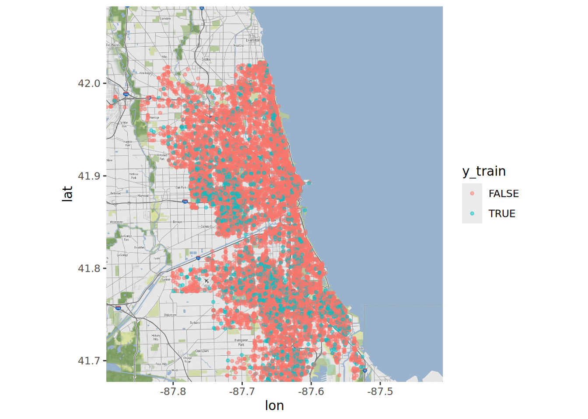
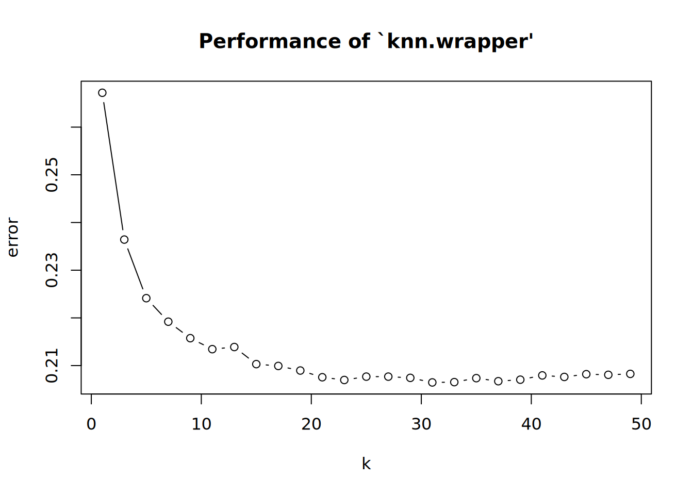
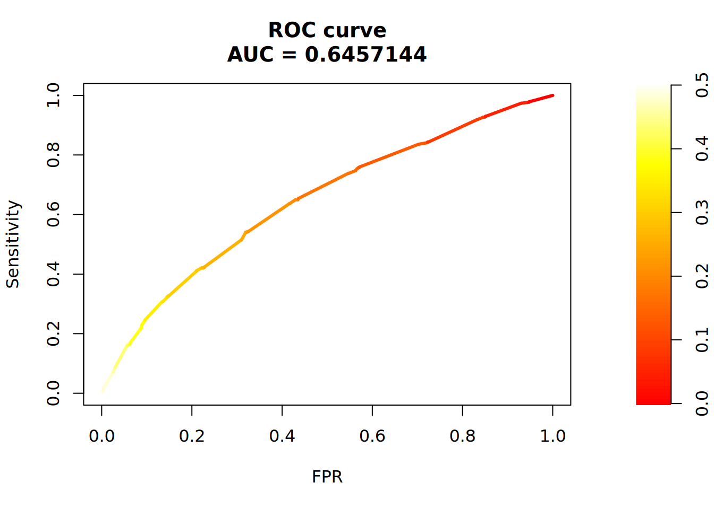
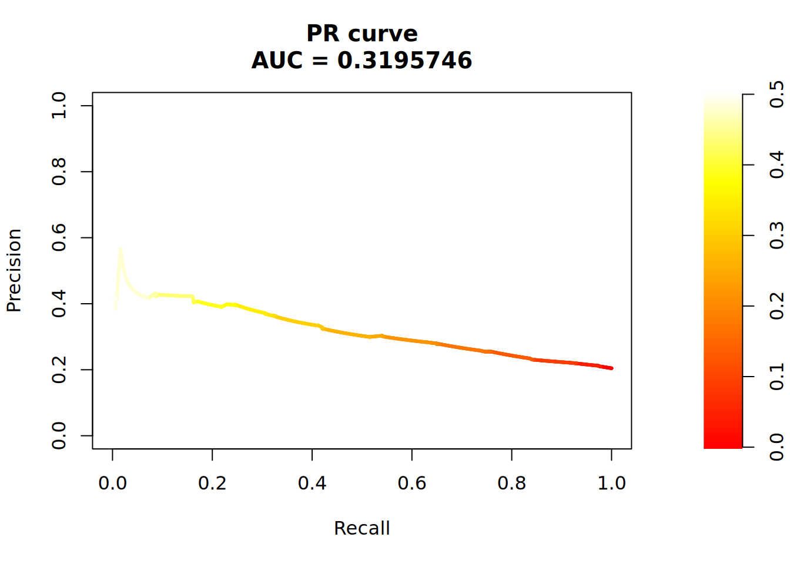

# devtools::install_github("dkahle/ggmap")
#library(learnr)
library(RSocrata)
library(ggplot2)
library(ggmap)
library(e1071)
library(class)
library(caret)
library(PRROC)
library(pROC)
library(tidyverse)Performance measures & kNN
Setup
Data
For this notebook we use data on incidents of crime in the City of Chicago. This data “… is extracted from the Chicago Police Department’s CLEAR (Citizen Law Enforcement Analysis and Reporting) system.” It contains a number of basic information about each crime incident, such as date, location, type and whether there was an arrest. Here we only pull in data from January 2018.
Source: https://data.cityofchicago.org/Public-Safety/Crimes-2001-to-present/ijzp-q8t2
ccj2018 <- read.socrata("https://data.cityofchicago.org/resource/6zsd-86xi.json?$where=date between '2018-01-01' and '2018-01-31'")
#str(ccj2018)
head(ccj2018) id case_number date block iucr
1 11193699 JB101825 2018-01-02 10:00:00 014XX S HOMAN AVE 0610
2 11192212 JB100020 2018-01-01 00:10:00 028XX N NATCHEZ AVE 143B
3 11192218 JB100041 2018-01-01 00:01:00 084XX S MANISTEE AVE 1310
4 11192223 JB100017 2018-01-01 00:09:00 009XX W ADDISON ST 0460
5 11192225 JB100070 2018-01-01 00:52:00 039XX S ARCHER AVE 2022
6 11192228 JB100029 2018-01-01 00:27:00 022XX S KEDZIE AVE 143A
primary_type description location_description arrest
1 BURGLARY FORCIBLE ENTRY CHA APARTMENT FALSE
2 WEAPONS VIOLATION UNLAWFUL POSS OTHER FIREARM ALLEY FALSE
3 CRIMINAL DAMAGE TO PROPERTY RESIDENCE FALSE
4 BATTERY SIMPLE VEHICLE NON-COMMERCIAL TRUE
5 NARCOTICS POSS: COCAINE STREET TRUE
6 WEAPONS VIOLATION UNLAWFUL POSS OF HANDGUN ALLEY TRUE
domestic beat district ward community_area fbi_code x_coordinate y_coordinate
1 FALSE 1021 010 24 29 05 1153932 1892909
2 FALSE 2511 025 36 19 15 1132592 1918227
3 FALSE 0423 004 7 46 14 1195962 1849465
4 FALSE 1924 019 44 6 08B 1169144 1924100
5 FALSE 0921 009 12 58 18 1159000 1878185
6 FALSE 1024 010 24 30 15 1155375 1888899
year updated_on latitude longitude location.type
1 2018 2018-05-04 15:51:04 41.861974172 -87.710418378 Point
2 2018 2018-05-04 15:51:04 41.931848306 -87.78816484 Point
3 2018 2018-05-04 15:51:04 41.741821184 -87.557574799 Point
4 2018 2018-05-04 15:51:04 41.947247732 -87.65367048 Point
5 2018 2018-05-04 15:51:04 41.821467456 -87.692217949 Point
6 2018 2018-05-04 15:51:04 41.850941431 -87.705229007 Point
location.coordinates location_address location_city location_state
1 -87.71042, 41.86197
2 -87.78816, 41.93185
3 -87.55757, 41.74182
4 -87.65367, 41.94725
5 -87.69222, 41.82147
6 -87.70523, 41.85094
location_zip
1
2
3
4
5
6 names(ccj2018) [1] "id" "case_number" "date"
[4] "block" "iucr" "primary_type"
[7] "description" "location_description" "arrest"
[10] "domestic" "beat" "district"
[13] "ward" "community_area" "fbi_code"
[16] "x_coordinate" "y_coordinate" "year"
[19] "updated_on" "latitude" "longitude"
[22] "location.type" "location.coordinates" "location_address"
[25] "location_city" "location_state" "location_zip" Some quick data preparation since most variables seem to be of type character by default. We also exclude cases with missing values.
ccj2018$arrest <- as.factor(ccj2018$arrest)
ccj2018$latitude <- as.numeric(ccj2018$latitude)
ccj2018$longitude <- as.numeric(ccj2018$longitude)
ccj2018 <- subset(ccj2018, complete.cases(ccj2018[,c(9,20,21)]))Train and test set
Next, we split the data into a train and test set.
set.seed(765)
train <- sample(1:nrow(ccj2018), 0.8*nrow(ccj2018))
c_train <- ccj2018[train,]
c_test <- ccj2018[-train,]In addition, we also need X and y data frames for both data pieces as input for knn(). In the next sections, the outcome will be arrest and we use (only) latitude and longitude as features.
X_train <- ccj2018[train,c(20,21)]
X_test <- ccj2018[-train,c(20,21)]
y_train <- ccj2018[train,9]
y_test <- ccj2018[-train,9]A quick look at our outcome variable.
summary(y_train)FALSE TRUE
12357 3268 summary(y_test)FALSE TRUE
3108 799 As a nice illustration of our prediction problem, we can use qmap() to build a map of Chicago and then plot the crime incidents colored by arrest on top.
api_keys <- read_csv("~/repos/api-keys.csv")
register_stadiamaps(api_keys |>
filter(key_id == "stadiamaps_key") |>
pull(key) )
bbox <- c(left = -87.896805, bottom = 41.677015, right = -87.409286, top = 42.082936)
map <-get_stadiamap(bbox = bbox, zoom = 12, maptype = "stamen_terrain")
map <- ggmap(map)map +
geom_point(data = X_train, aes(x = longitude, y = latitude, color = y_train), size = 1, alpha = 0.5) Warning: Removed 305 rows containing missing values or values outside the scale range
(`geom_point()`).
kNN
In order to find a useful kNN setup, we tune k using 10-Fold Cross-Validation. This can be done e.g. with tune.knn().
set.seed(761)
tune <- tune.knn(X_train, y_train,
# k takes 1 to 25
k = seq(1, 50, 2),
# 10 fold cross validation
tunecontrol = tune.control(sampling = "cross"), cross = 10)
summary(tune)
Parameter tuning of 'knn.wrapper':
- sampling method: 10-fold cross validation
- best parameters:
k
31
- best performance: 0.2064655
- Detailed performance results:
k error dispersion
1 1 0.2672029 0.015061210
2 3 0.2364194 0.014246301
3 5 0.2241308 0.011805896
4 7 0.2192023 0.009756644
5 9 0.2157459 0.009500124
6 11 0.2134408 0.006422457
7 13 0.2138895 0.007676999
8 15 0.2103054 0.007052546
9 17 0.2099213 0.007424717
10 19 0.2089611 0.007295530
11 21 0.2075529 0.005690947
12 23 0.2069770 0.006215810
13 25 0.2076812 0.006889022
14 27 0.2076810 0.007416950
15 29 0.2074252 0.006496074
16 31 0.2064655 0.007106230
17 33 0.2065295 0.007311366
18 35 0.2073613 0.006667115
19 37 0.2067217 0.008560472
20 39 0.2070416 0.008217489
21 41 0.2079378 0.008729263
22 43 0.2076174 0.008000268
23 45 0.2081936 0.009049583
24 47 0.2080653 0.008055665
25 49 0.2082573 0.008150788# used to tune value, choose lowest error
# about 20% of the time we were wrong on our predictions
plot(tune)
Seems like k = 23 is a good choice. We pass this information to knn(), together with X from the test data. Note that the resulting object are the test set predictions, since with kNN there is no separate model to be stored.
y_knn <- knn(X_train, X_test, y_train, k = 23, prob = TRUE)We can also add a logistic regression model for comparison, although this is unlikely to perform well given the prediction task at hand.
logit <- glm(arrest ~ latitude + longitude, data = c_train, family = binomial)
summary(logit)
Call:
glm(formula = arrest ~ latitude + longitude, family = binomial,
data = c_train)
Coefficients:
Estimate Std. Error z value Pr(>|z|)
(Intercept) -143.5878 29.3471 -4.893 9.94e-07 ***
latitude -2.8208 0.2748 -10.266 < 2e-16 ***
longitude -2.9689 0.3878 -7.656 1.92e-14 ***
---
Signif. codes: 0 '***' 0.001 '**' 0.01 '*' 0.05 '.' 0.1 ' ' 1
(Dispersion parameter for binomial family taken to be 1)
Null deviance: 16026 on 15624 degrees of freedom
Residual deviance: 15913 on 15622 degrees of freedom
AIC: 15919
Number of Fisher Scoring iterations: 4Given the logit object, we can generate predicted risk scores for the test set and transform those into predicted classes. Note that we are using an arbitrary classification threshold (0.5), which might not be the best option.
yp_logit <- predict(logit, newdata = c_test, type = "response")
y_logit <- as.factor(ifelse(yp_logit > 0.5, "TRUE", "FALSE"))Prediction performance
Now we can inspect the prediction performance of kNN and the logit model using confusionMatrix() from caret, which can be used to (also) display a lot of performance measures, given predicted classes.
confusionMatrix(y_knn, y_test, mode = "everything", positive = "TRUE")Confusion Matrix and Statistics
Reference
Prediction FALSE TRUE
FALSE 2995 680
TRUE 113 119
Accuracy : 0.797
95% CI : (0.7841, 0.8095)
No Information Rate : 0.7955
P-Value [Acc > NIR] : 0.4151
Kappa : 0.1529
Mcnemar's Test P-Value : <2e-16
Sensitivity : 0.14894
Specificity : 0.96364
Pos Pred Value : 0.51293
Neg Pred Value : 0.81497
Precision : 0.51293
Recall : 0.14894
F1 : 0.23084
Prevalence : 0.20450
Detection Rate : 0.03046
Detection Prevalence : 0.05938
Balanced Accuracy : 0.55629
'Positive' Class : TRUE
confusionMatrix(y_logit, y_test, mode = "everything", positive = "TRUE")Warning in confusionMatrix.default(y_logit, y_test, mode = "everything", :
Levels are not in the same order for reference and data. Refactoring data to
match.Confusion Matrix and Statistics
Reference
Prediction FALSE TRUE
FALSE 3108 799
TRUE 0 0
Accuracy : 0.7955
95% CI : (0.7825, 0.808)
No Information Rate : 0.7955
P-Value [Acc > NIR] : 0.5095
Kappa : 0
Mcnemar's Test P-Value : <2e-16
Sensitivity : 0.0000
Specificity : 1.0000
Pos Pred Value : NaN
Neg Pred Value : 0.7955
Precision : NA
Recall : 0.0000
F1 : NA
Prevalence : 0.2045
Detection Rate : 0.0000
Detection Prevalence : 0.0000
Balanced Accuracy : 0.5000
'Positive' Class : TRUE
Additionally, ROC and PR curves are helpful for evaluating prediction performance with categorical outcomes. Here we could (e.g.) use the PRROC package. As an example, we only consider the knn model.
First, get predicted risk scores.
yp_knn <- 1 - attributes(y_knn)$probThen, create helper objects…
pc <- yp_knn[y_test == "TRUE"]
nc <- yp_knn[y_test == "FALSE"]…that can be passed to roc.curve() (see ?roc.curve).
roc <- roc.curve(scores.class0 = pc, scores.class1 = nc, curve = T)Finally, we can print and plot the resulting roc object.
roc
ROC curve
Area under curve:
0.6457144
Curve for scores from 0 to 0.5
( can be plotted with plot(x) )plot(roc, scale.color = heat.colors(100))
Same for PR curve.
pr <- pr.curve(scores.class0 = pc, scores.class1 = nc, curve = T)
pr
Precision-recall curve
Area under curve (Integral):
0.3195746
Area under curve (Davis & Goadrich):
0.3195753
Curve for scores from 0 to 0.5
( can be plotted with plot(x) )plot(pr, scale.color = heat.colors(100))
Try to calculate precision at top 100, i.e. the expected precision when classifying the 100 test incidents with the highest risk scores as being arrests (TRUE). For this, we need to create a new prediction vector. The function order() might be helpful here.
yp <- data.frame(yp_knn, y_test)
yp <- yp[order(-yp_knn),]
yp$yt_knn <- "FALSE"
yp[1:100,]$yt_knn <- "TRUE"Next, compute the precision given the new predicted classes and y_test.
precision(as.factor(yp$yt_knn), yp$y_test, relevant = "TRUE")[1] 0.46Classification thresholds
In the previous plots, we have seen that performance measures such as sensitivity and specificity are highly dependent on the underlying classification threshold. Therefore, lets try to find a threshold that satisfies some optimality criterion, instead of simply using 0.5. For this purpose, we have to create another roc object for the knn result, now using the pROC package.
roc2 <- roc(y_test, yp_knn)Setting levels: control = FALSE, case = TRUESetting direction: controls < casesroc2
Call:
roc.default(response = y_test, predictor = yp_knn)
Data: yp_knn in 3108 controls (y_test FALSE) < 799 cases (y_test TRUE).
Area under the curve: 0.6457This package provides the function coords(), which can be used for threshold optimization (see ?coords). Note that in an actual application, we couldn’t use the test set for this purpose, so another hold-out set would be needed.
knn_t <- coords(roc2, x = "best", best.method = "closest.topleft", best.weights = c(1, 0.2))
knn_t threshold specificity sensitivity
1 0.2939815 0.7892535 0.4117647We can now use this new threshold to predict class membership.
y_knn2 <- as.factor(ifelse(yp_knn > unlist(knn_t[1]), "TRUE", "FALSE"))And finally build a confusion matrix using the predicted classes from above.
confusionMatrix(y_knn2, y_test, mode = "everything", positive = "TRUE")Confusion Matrix and Statistics
Reference
Prediction FALSE TRUE
FALSE 2453 470
TRUE 655 329
Accuracy : 0.7121
95% CI : (0.6976, 0.7262)
No Information Rate : 0.7955
P-Value [Acc > NIR] : 1
Kappa : 0.1851
Mcnemar's Test P-Value : 4.116e-08
Sensitivity : 0.41176
Specificity : 0.78925
Pos Pred Value : 0.33435
Neg Pred Value : 0.83921
Precision : 0.33435
Recall : 0.41176
F1 : 0.36904
Prevalence : 0.20450
Detection Rate : 0.08421
Detection Prevalence : 0.25186
Balanced Accuracy : 0.60051
'Positive' Class : TRUE